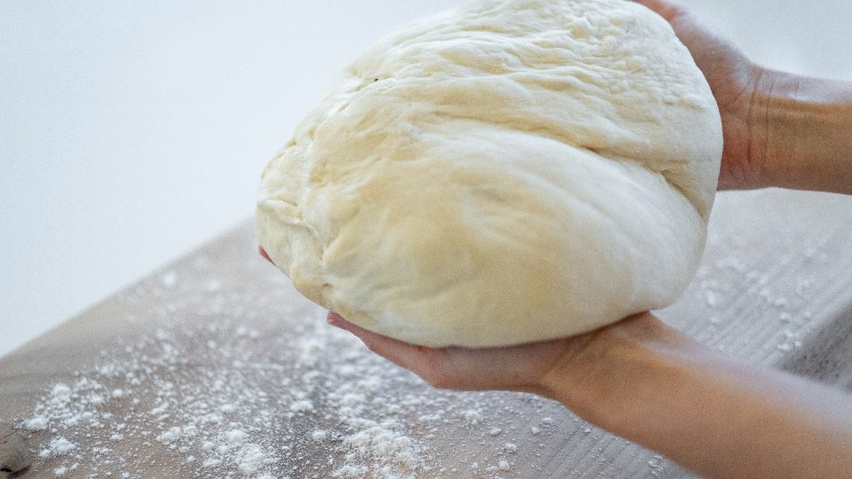

About
Who is writing, and why
One mother of two, both born at home, one baby I never met. This page says plainly what the blog is for, so you can decide whether it is worth your Tuesday.
I am Olivia Burgman. I have been a mother for many years, and I have experience in home births, homeschooling and fashion. I have a natural mindset, and I am always looking to connect with like-minded people.
Our family is focused on keeping the peace and upholding biblical values. We are passionate about raising our children in a way that will bless them throughout their lives, and about having fun while we do it. We live on a farm, which means the children learn the value of hard work, of taking care of the land, and of trades, from being watched doing them rather than from a book about them.
I am the mother of two children, both born in our own home, and of one who was not. Karis came in May 2018 after seventeen hours of labour, and Hezekiah in July 2019 at 9:43 in the evening, in a much louder way. They are the reason this blog exists, and so is the summer of 2016, which is the reason it has a particular shape.
I started writing these down because I kept telling the same story to different women and losing the end of it, and because several things I was told about my own pregnancy turned out to be wrong. None of it is advice. I am not a midwife and not a doctor, and the only credentials I have are two births and a loss, which is not the same thing at all.
What this blog will not do
It will not tell you that fear is a character flaw, or that a difficult pregnancy is a failure of faith. I have believed both of those things and they are both untrue. It will not rank methods or declare a winning way to give birth, and it will not ask you to be brave on my account.
Where a post describes something I did, I have tried to say what the conditions were, because the conditions are usually the part that matters. And where a post is about childbirth at home, it carries a short note from me about when to call an ambulance. Please read those. They are the least interesting thing on the site and the most important.
Corrections are welcome and will be printed. If I have said something about a pregnancy, a birth or a loss that is wrong, write and say so plainly. I will fix the post and credit you if you want it.
Scripture
I quote Scripture in the King James Version, and every quotation here has been checked against the text rather than typed from memory. If a verse is bracketed — like the [and] and [that] in Psalm 139 — those are the translators’ supplied words, and they are left in.
“Now the Lord is that Spirit: and where the Spirit of the Lord [is], there [is] liberty.” 2 Corinthians 3:17
Write to me
The most useful email I receive is a description of what happened when you tried something from a post, especially when it did not work. I read all of them, usually late, usually with tea. You can use olivia@happyheartsathome.com, or subscribe to the monthly letter and reply there.

- Writing about Birth, loss, and children at home
- Also Homeschooling, farm life, trades, homemaking, fashion
- Children Two, both born at home
- Started September 2026
- Cadence When there is something true to add
- Letters One a month, no tracking
- Privacy No analytics, no cookies, no accounts
Letters from the kitchen table
One a month. What the children are up to, and what I got wrong last month.
No tracking, no sequence, unsubscribe in one click.